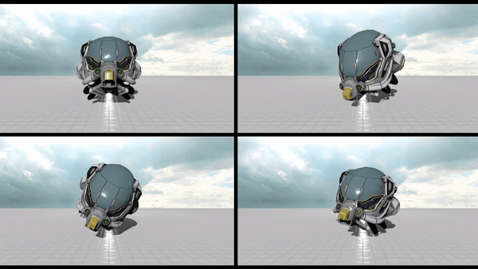

Mainly there are two ways of achieving multiple Viewports, the first way is by using one scenegraph and multiple virtual cameras, the second way is by using multiple scenegraphs with one camera setup.
First off we begin with the way of using multiple scenegraphs, but why would you want to use this way?
Using multiple scene graphs can be useful when you want to compare different objects or models in the same scene with the same camera perspective.
First we need to initialize the variables in the protected section:
SceneGraph m_SGs[4];
SGNTransformation m_RootSGNs[4];
To build multiple scenegraphs we can use a for loop inside of the init section:
for (uint8_t i = 0; i < 4; ++i) {
m_RootSGNs[i].init(nullptr);
m_SGs[i].init(&m_RootSGNs[i]);
}
Within the loop we can create objects for each scenegraph simultaneously, for example lets add a helmet:
for (uint8_t i = 0; i < 4; ++i) {
m_RootSGNs[i].init(nullptr);
m_SGs[i].init(&m_RootSGNs[i]);
m_HelmetTransSGNs[i].init(&m_RootSGNs[i], Vector3f(0.0f, 3.5f, 0.0f));
m_HelmetGeomSGNs[i].init(&m_HelmetTransSGNs[i], &m_Helmet, Vector3f::Zero(), Quaternionf::Identity(), Vector3f(3.0f, 3.0f, 3.0f));
}
The helmet is a single StaticActor, but for every instance of it we need transformation and geometry nodes, all need to be initialized first in the protected section:
StaticActor m_Helmet;
SGNTransformation m_HelmetTransSGNs[4];
SGNGeometry m_HelmetGeomSGNs[4];
Also the helmet needs to be loaded beforehand inside the init function:
T3DMesh<float> M;
SAssetIO::load("Assets/ExampleScenes/Helmet/DamagedHelmet.gltf", &M);
setMeshShader(&M, 0.2f, 0.24f);
M.computePerVertexNormals();
M.computePerVertexTangents();
m_Helmet.init(&M);
M.clear();
Now let us try to make each helmet in these scenegraphs rotate with the same speed but around different axes, for that we need to create these rotation values before the loop:
float Speed = 10.0f; // Degree per second
Quaternionf HelmetRotationDeltas[4];
HelmetRotationDeltas[0] = AngleAxisf(GraphicsUtility::degToRad(Speed / 60.0f), Vector3f::UnitX());
HelmetRotationDeltas[1] = AngleAxisf(GraphicsUtility::degToRad(Speed / 60.0f), Vector3f::UnitY());
HelmetRotationDeltas[2] = AngleAxisf(GraphicsUtility::degToRad(Speed / 60.0f), Vector3f::UnitZ());
HelmetRotationDeltas[3] = AngleAxisf(GraphicsUtility::degToRad(Speed / 60.0f), Vector3f(1.0f, 1.0f, 1.0f).normalized());
And lastly let us add the rotation in the for-loop:
for (uint8_t i = 0; i < 4; ++i) {
m_RootSGNs[i].init(nullptr);
m_SGs[i].init(&m_RootSGNs[i]);
m_HelmetTransSGNs[i].init(&m_RootSGNs[i], Vector3f(0.0f, 3.5f, 0.0f));
m_HelmetGeomSGNs[i].init(&m_HelmetTransSGNs[i], &m_Helmet, Vector3f::Zero(), Quaternionf::Identity(), Vector3f(3.0f, 3.0f, 3.0f));
m_HelmetTransSGNs[i].rotationDelta(HelmetRotationDeltas[i]);
}
To view the newly created scenegraphs we need to create viewports, one for the GBuffer and four for the scenegraphs we created
For that we initialize those viewports in the protected section:
RenderDevice::Viewport m_GBufferVP;
RenderDevice::Viewport m_VPs[4];
Next set the viewport for the GBuffer after the for-loop from before:
_GBufferVP.Position = Vector2i(0, 0);
m_GBufferVP.Size = Vector2i(m_RenderDev.gBuffer()->width(), m_RenderDev.gBuffer()->height());
m_RenderDev.viewport(RenderDevice::RENDERPASS_GEOMETRY, m_GBufferVP);
//and lets add the function we will write later for updating our viewports
updateViewportsAndCamera();
With that done, lets switch to the run function where our rendering is handled, here we add another for-loop to perform the rendering of the four viewports:
for (uint8_t i = 0; i < 4; ++i) {
m_SGs[i].update(60.0f / m_FPS);
m_RenderDev.activePass(RenderDevice::RENDERPASS_SHADOW, &m_Sun);
m_SGs[i].render(&m_RenderDev);
m_RenderDev.activePass(RenderDevice::RENDERPASS_GEOMETRY);
m_SGs[i].render(&m_RenderDev);
m_RenderDev.viewport(RenderDevice::RENDERPASS_LIGHTING, m_VPs[i]);
m_RenderDev.activePass(RenderDevice::RENDERPASS_LIGHTING, nullptr, (i == 0) ? true : false);
}
Lastly lets align those four viewports and update them via a function called updateViewportsAndCamera() inside the protected section:
void updateViewportsAndCamera(void) {
uint32_t RenderWinWidth = m_RenderWin.width();
uint32_t RenderWinHeight = m_RenderWin.height();
uint32_t Margin = 14;
Vector2i VPSize = Vector2i(RenderWinWidth / 2, RenderWinHeight / 2) - 2 * Vector2i(Margin, Margin) + Vector2i(Margin / 2, Margin / 2);
// Top left
m_VPs[0].Position = Vector2i(0, RenderWinHeight / 2) + Vector2i(Margin, Margin / 2);
// top right
m_VPs[1].Position = Vector2i(RenderWinWidth / 2, RenderWinHeight / 2) + Vector2i(Margin / 2, Margin / 2);
// bottom left
m_VPs[2].Position = Vector2i(Margin, Margin);
// bottom right
m_VPs[3].Position = Vector2i(RenderWinWidth / 2, 0) + Vector2i(Margin / 2, Margin);
for (uint8_t i = 0; i < 4; ++i)
{
m_VPs[i].Size = VPSize;
}
m_Cam.projectionMatrix(m_VPs[0].Size[0], m_VPs[0].Size[1], GraphicsUtility::degToRad(45.0f), 0.1f, 1000.0f);
m_GBufferVP.Size = Vector2i(m_RenderDev.gBuffer()->width(), m_RenderDev.gBuffer()->height());
m_RenderDev.viewport(RenderDevice::RENDERPASS_GEOMETRY, m_GBufferVP);
// viewport for forward pass (required for correct screenshots)
RenderDevice::Viewport VFPass;
VFPass.Position = Vector2i(0, 0);
VFPass.Size = Vector2i(RenderWinWidth, RenderWinHeight);
m_RenderDev.viewport(RenderDevice::RENDERPASS_FORWARD, VFPass);
}//updateViewports

The second way is using multiple virtual cameras, which can be useful if you want different perspectives or for example when creating virtual reality applications to simulate stereoscopic vision.